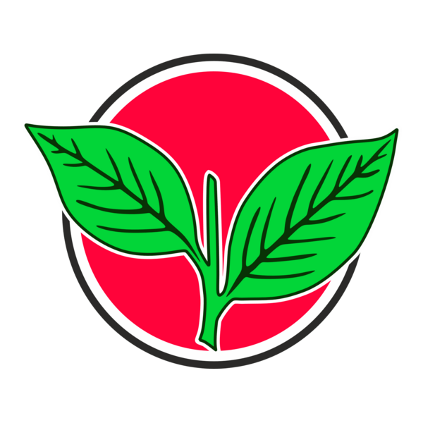

Three alliances. ₹2 lakh crore in promises. One state that already borrows a lakh crore a year. A story told in numbers, about the fiscal crossroads 5.67 crore Tamil Nadu voters face on April 23.
For six decades, Tamil Nadu politics has been a two-party affair — DMK or AIADMK, and nothing else. In 2026, actor-politician Vijay's TVK has disrupted that binary, creating the state's first credible three-cornered contest.
Secular Progressive Alliance
Led by CM M.K. Stalin · Ruling · ~175 seats for DMK
DMKINCCPI(M)CPIVCKMDMKDMDKIUML
MNM (Kamal Haasan) extends support but not contesting. Won 159/234 in 2021.

National Democratic Alliance
Led by E.K. Palaniswami · Opposition · 297 promises
AIADMKBJPPMKAMMK
AIADMK won 66 seats in 2021. BJP had 4 seats. Seeking return to power.
Tamilaga Vettri Kazhagam
Led by actor Vijay · New entrant · All 234 seats alone
TVK🎵 Whistle symbol
Founded Feb 2024. Rejected NDA offer of 90 seats + CM post. Centre-left, secular positioning.
TVK's entry doesn't just add a third candidate — it rewrites the electoral arithmetic. Here's what the dynamics look like in practice:
①
Split votes decide close seats
In 2021, DMK won 159 of 234 seats — many with margins under 10%. A TVK vote share of 12–18% in those seats could redistribute outcomes even if TVK itself doesn't win them. Which bloc TVK draws from more — first-time voters or AIADMK-leaning switchers — is the pivotal variable.
②
The manifesto arms race escalates
A three-party contest pushes each alliance to compete for the median voter rather than consolidate its base. The result: more expansive promises, as each party tries to out-bid the others on welfare. The aggregate promise cost of all three manifestos — over ₹2 lakh crore — reflects exactly this dynamic.
③
Mandate arithmetic shifts post-result
A ruling party winning a multi-cornered contest with under 40% of the vote governs with a contested popular mandate. That changes the political cost of fiscal adjustment — making it easier to defer hard choices, and harder to build cross-party consensus around them.
Manifestos make claims — about numbers, track records, and what's achievable. A few worth examining closely:
Key claims — context check
Reading the fine print on 2026 manifesto commitments
Track record
DMK: ₹57,312 Cr in new spending
DMK has a delivery precedent here — Magalir Urimai (₹1,000/mo to women) was promised in 2021 and implemented in the first year of their term. Their 2026 manifesto expands existing schemes rather than creating wholly new ones.
Risk: expansion costs are permanent. Each ₹500/month increase to 1.15 Cr beneficiaries adds ~₹6,900 Cr/yr to the structural base indefinitely.
Context needed
AIADMK: ₹74,970 Cr — the largest headline figure
AIADMK's NDA alliance brings BJP's central scheme leverage, which could partially offset state costs on some items. Their 2011–2021 governance included several large-scale welfare expansions.
Note: ₹20,000 one-time household relief is non-recurring — the ongoing annual base (excluding it) is ~₹54,970 Cr/yr, closer to the other parties' numbers.
First-timer
TVK: ₹72,765 Cr, zero governance track record
TVK was founded in February 2024 and has never held office. Its ₹2,500/month women's transfer (₹39,000 Cr/yr) is the costliest single scheme proposed — nearly matching the state's entire annual revenue deficit.
TVK's fiscal platform leans on assumed efficiency gains and renegotiated Centre-state transfers — neither of which is guaranteed in the first term of a new government.
All three
Shared silence on debt servicing and TASMAC
No party's manifesto addresses how the ₹70,254 Cr interest burden — which grew 29% in two years — will be managed if new schemes add to borrowing. All three are similarly quiet on TASMAC's structural role in the revenue base.
This is a common pattern in electoral manifestos everywhere. The numbers are presented here so readers can draw their own conclusions.
With the political landscape mapped, the next question is the one that underlies all of this: how big is Tamil Nadu's economy, how much does the government earn, and how much room — if any — remains for new spending?
The state earns ₹3.32 lakh crore but spends ₹4.39 lakh crore. The difference — the deficit — is borrowed every single year. Every new promise starts from a position of deficit, not surplus.
· · ·
Chapter II
The 62-paisa lock
One number frames the entire conversation about Tamil Nadu's fiscal capacity — and it rarely surfaces in manifesto discussions:
For every ₹1 the state earns...
Committed expenditure as share of revenue receipts · FY 2025-26 BE
62 paise of every rupee is already spoken for — salaries for 8 lakh+ government employees, pensions for retirees, and interest on ₹9.3 lakh crore in debt.[3] These are legally binding. They cannot be cut.
The trend is worsening. Committed expenditure has grown from ₹1.73L Cr (FY24) → ₹1.90L Cr (FY25) → ₹2.07L Cr (FY26).[3][4] Interest payments alone jumped 29%, from ₹54,676 Cr to ₹70,254 Cr in two years.
· · ·
Chapter III
Where the money comes from
Tamil Nadu raises 75.3% of its revenue from its own sources[2] — one of the highest self-reliance ratios in India. Only 24.7% comes from the Centre. The Finance Minister called the state's 4% share of central taxes a "gross injustice" given it contributes 9% of GDP.[5]
Notice: GST and VAT together make up 74% of all tax revenue. A significant chunk of that VAT comes from one politically charged source — TASMAC, the state's liquor monopoly.
TASMAC: the revenue elephant
State liquor monopoly — revenue trajectory (₹ Crore)
2019-20
₹33,133 Cr
₹33,133
2020-21
₹33,811 Cr
₹33,811 +2%
2021-22
₹36,051 Cr
₹36,051 +6.6%
2022-23
₹44,121 Cr
₹44,121 +22.4%
2023-24
₹45,856 Cr
₹45,856 +3.9%
2024-25
₹48,344 Cr · VAT ₹37,324 + Excise ₹11,020
₹48,344 +5.4%
TASMAC contributes ~25% of the state's own tax revenue — a significant concentration in a single revenue stream. Its share of GSDP has been declining as the broader economy diversifies.[6] All three parties' 2026 manifestos are silent on prohibition.
Before weighing new promises, it helps to map what already exists. Tamil Nadu runs one of India's most comprehensive welfare architectures — and its scale sets the baseline against which any new commitment must be measured:
Existing welfare spend — treemap view
FY 2025-26 BE · Major subsidy and transfer heads (₹ Cr)
⚡ TANGEDCO
₹30,434
Agri + domestic power subsidy
👩 Magalir Urimai
₹13,807
₹1K/mo · 1.15 Cr women
🍚 Food (PDS)₹12,500
🚌 Transport₹9,682
🏠 Housing₹3,500
📚 Edu₹1,696
🏥 Health
₹1,461
Total existing welfare~₹1.60 lakh Cr = 36% of total expenditure
Now you know the full picture: what the state earns, what's locked, what's already spent on welfare. Here's what the three forces are promising on top of all that.
DMK · SPA
₹57,312 Cr
13.0% of total budget
525 promises · 6 key schemes
AIADMK · NDA
₹74,970 Cr
17.1% of total budget
297 promises · 7 key schemes
TVK · Alone
₹72,765 Cr
16.6% of total budget
Vijay's party · 7 key schemes
Sources: Party manifestos released 22-29 Mar 2026 · Costings based on beneficiary counts × per-unit amounts from Organiser, Zee News, NewKerala
Key schemes — head-to-head
Annual cost estimates (₹ Cr) based on stated beneficiary targets
Scheme
DMK
ADMK
TVK
Women's cash transfer
31,200
31,200
39,000
One-time household relief
16,000
20,000
—
Free LPG cylinders
—
6,138
11,160
Unemployment allowance
—
4,200
11,010
Free bus travel (expanded)
—
4,581
6,545
Old-age pension (₹2K)
—
6,960
—
Free laptops
7,350
1,890
—
Education stipends
2,762
—
2,250
TOTAL (first-year)
₹57,312
₹74,970
₹72,765
Sources: DMK manifesto (29 Mar 2026) · AIADMK manifesto (22 Mar 2026) · TVK manifesto (29 Mar 2026) · Costings from Organiser analysis
· · ·
Chapter VI
The fiscal squeeze
Placing the new promises alongside existing commitments gives us the consolidated picture — and clarifies where the real fiscal pressure lies:
Stacking the bills against the budget
New promises on top of existing commitments — how each scenario compares to revenue and the budget ceiling
Committed (salaries, interest, pensions)
Existing welfare
DMK new promises
AIADMK new promises
TVK new promises
Revenue (₹3.32L Cr)
Budget ceiling (₹4.39L Cr)
Sources: All budget figures from [1] PRS India 2025-26 · Promise costings from manifesto analysis
Every extra rupee of spending has to come from somewhere. There are three levers — and each carries a real cost:
Option A · Borrow more
Debt climbs past ₹10.4L Cr
Outstanding debt already stands at ₹9.30L Cr — 26.07% of GSDP.[8] Funding all new promises through borrowing would push the debt-to-GSDP ratio toward the 15th Finance Commission's ceiling of 28.7%.
↑ Interest payments rise further, compounding the committed expenditure lock year on year
Option B · Raise taxes
Own tax revenue must grow 25–35%
Tamil Nadu's own-tax revenue has grown at 7–15% per year in recent years.[1] Bridging the gap through taxation alone would require either entirely new levies or growth rates the state has never achieved.
↑ Puts pressure on households and businesses already navigating post-pandemic recovery
Option C · Cut elsewhere
Capital expenditure is the only flex
With salaries, pensions and interest locked in, the only genuinely discretionary line is the ₹57,231 Cr capital budget.[9] Redirecting it funds welfare — but slows road-building, hospital construction and infrastructure investment.
↓ Long-run growth potential constrained by under-investment in productive assets
Tamil Nadu is not broke. It is a growing, diversified, fundamentally strong economy. Its debt-to-GSDP ratio (26.07%) is within FRBM limits.[8] Its fiscal deficit sits at the 3% ceiling.[1]
At the same time, large new commitments require meaningful trade-offs — a conversation that has not yet featured prominently in this campaign. The 62% committed expenditure lock[3] means that whoever forms the government will need to navigate a tightly constrained fiscal space from day one.
The arithmetic of choice
₹3.32L Cr
Revenue earned
₹2.07L Cr
Already locked (62%)
₹1.60L Cr
Existing welfare
₹57-75K Cr
New promises
The arithmetic is unforgiving. The question heading into April 23 is not just who wins — but which approach to managing these trade-offs voters find most credible.
Quick Poll
Who are you rooting for?
The numbers have been laid out. Now tell us — which alliance has earned your confidence heading into April 23?